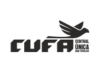
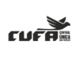

A associação Unidos do Jangadeiro é uma Organização da Sociedade Civil sem fins lucrativos, fundada em 15 de fevereiro de 2018, com sede na Zona Sul de São Paulo, no bairro Parque Independência.
Surgimos da inquietação de moradores que, ao observar de perto a dura realidade enfrentada por muitas famílias da região, decidiram agir. Desde então, nos dedicamos à transformação social de forma concreta, afetiva e constante.
Nosso trabalho nasceu do encontro entre comunidade, voluntários e agentes da saúde, e rapidamente se expandiu para atender uma ampla gama de necessidades da população local — especialmente de crianças, mães solo, idosos, pessoas em situação de rua e cidadãos em condição de vulnerabilidade social.
Promover dignidade, inclusão e qualidade de vida por meio de ações humanitárias, educacionais, culturais e de geração de renda. Trabalhamos todos os dias para garantir a segurança alimentar, fortalecer os vínculos comunitários e criar oportunidades reais de crescimento para quem mais precisa.
Ser um centro de referência comunitária, reconhecido pelo impacto positivo na vida das pessoas, oferecendo acolhimento, ferramentas de transformação e um espaço onde todos se sintam valorizados, respeitados e motivados a construir um futuro melhor.
Atuamos com solidariedade ativa, inclusão, respeito e compromisso social. Nossas ações são guiadas pela ética, transparência e pelo fortalecimento da comunidade, sempre acreditando na educação como ferramenta de transformação.


 
